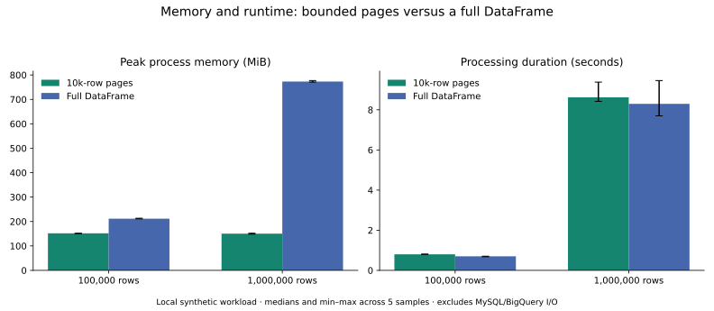

68 passing
Local validation
Includes a real disposable MySQL source. Five BigQuery integration tests are opt-in and have not been executed.
An evidence-based improvement plan for mysql-bigquery-etl: correct data, reliable recovery, measurable performance, and a clear business outcome.
Primary: Senior Data EngineerSecondary: Data Platform EngineerStretch: Staff-level design discussionmake demo and make demo-report. Cloud execution requires explicit opt-in and remains deferred. Separate-process crash recovery and competing ownership checks pass. Next: real MySQL extraction benchmarks. Recovery evidence. Local demo and tradeoffs.The code now includes bounded MySQL snapshots, timestamp lookback, reconciliation and replay, strict schema/decimal contracts, staged publication and fencing, structured logging, and Terraform definitions for Cloud Run Jobs. The original audit below describes the starting point, not the current source.
Includes a real disposable MySQL source. Five BigQuery integration tests are opt-in and have not been executed.
At 1m synthetic rows, bounded processing used 150.32 MiB median peak RSS versus 772.95 MiB full-frame, with 3.9% greater median processing time. This excludes MySQL/BigQuery I/O.
Deployment, actual transaction/concurrency tests, IAM and alerts, cloud cost, and the freshness observation period still need the selected sandbox.
Review the current architecture and quickstart, open gates, benchmark methodology/results, presentation guide, and case study and supported CV wording. Personal decision notes remain local in docs/architecture-decisions.md.

The Python application reads users, orders, and products from MySQL, transforms them in pandas, and loads them into Google BigQuery. Users and orders use an integer-ID checkpoint; products are read in full. Transformations normalize email, dates, categories and prices, calculate order totals, and assign order-size buckets.
main.py provides a command-line entry point. server.py exposes a Flask GET endpoint that runs the whole pipeline synchronously. Docker and deployment files target Cloud Run, with Cloud Scheduler configured to trigger every six hours. These are repository intentions; no running cloud deployment was inspected.
Separate configuration and pipeline classes, transform hooks, metadata tracking, load-job waiting, non-root container user, secret support, and a basic CI workflow.
The code demonstrates ETL concepts. Correctness under reruns, changing records, failures, and concurrent execution is not yet established. Tests cover configuration only.
Show that you can define guarantees, detect failures, recover safely, control costs, and explain tradeoffs using reproducible evidence.
Assumption: “big positions” means senior data engineering or data platform roles. This can strengthen a candidacy; a repository alone does not establish staff-level organizational impact or replace production experience.
Findings below come from the original source inspection at commit 8a6f6a0; consult the implementation update for current status. Severity describes the impact if this code processes real recurring workloads.
| Priority / finding | Repository evidence & consequence | Required outcome |
|---|---|---|
| P0 · Full-load duplication | etl_pipeline.py: load_data() always uses WRITE_APPEND. Products are full-read on every run, so successive runs repeat existing products. | Define snapshot replacement or key-based upsert semantics. Publish only validated snapshots; specify whether an empty source clears the target. |
| P0 · Unsafe replay | run_pipeline() loads rows before checkpointing. A failure in between replays rows into an append-only destination. update_last_processed_id() submits its query without waiting for completion. | Stage a batch; deduplicate and merge by key; commit destination changes and checkpoint together inside BigQuery. Await completion and test ambiguous outcomes. |
| P0 · Metadata errors reset progress | get_last_processed_id() returns zero for every exception, including permission and service failures. Existing rows may be re-extracted and appended. | Distinguish initial state from errors. Fail closed on unknown progress; retry only classified transient failures with a bound. |
| P0 · Incomplete change capture | extract_data() reads only primary_key > last_id. Updates/deletes are missed. Even new IDs can commit out of order and fall behind the saved checkpoint. | State source assumptions explicitly. Use an update-time cursor with bounded overlap plus reconciliation, or choose binlog CDC when strict change capture is required. |
| P0 · Overlapping executions | scripts/deploy.sh sets concurrency 10 and max instances 5; neither entry point enforces a writer lease. Two runs can read the same checkpoint. | Serialize writers per table with an expiring, fenced lease. Runtime task/concurrency settings alone are not a cross-execution lock. |
| P1 · Bootstrap order | create_metadata_table() runs before load_data(), where the dataset is created. A missing dataset can fail the first run before the creation code is reached. | Provision datasets and metadata before work begins; verify a fresh-environment smoke test. |
| P1 · Unbounded memory | pd.read_sql() loads a complete extraction into one DataFrame. The deployment specifies 2 GiB memory. | Use bounded keyset batches and stable extraction bounds; measure process RSS and source-query impact. |
| P1 · Implicit data contracts | BigQuery schema autodetection; coercion can silently turn invalid dates/prices into nulls; unknown transform names are ignored. Money calculations lack an explicit decimal policy. | Version schemas, validate types and transformations, preserve exact monetary values, and quarantine invalid rows with reason codes. |
| P1 · Deployment inconsistencies | Docker uses Python 3.9; CI uses 3.11. The Scheduler command has spaces/comment after a continuation backslash. Flask runs its development server. No .dockerignore is present alongside COPY . .. | Align and lock the runtime; test deployment scripts; exclude secrets and local artifacts from build context; use a batch job entry point. |
| P1 · Operational confidence | tests/test_config.py contains two config tests. CI has no pipeline or integration tests. No infrastructure-as-code, alerts, or recovery runbook is present. | Add failure-oriented coverage, repeatable deployment, freshness alerts, and a demonstrated restore/replay procedure. |
| P2 · Config and SQL hygiene | Connection URLs and SQL are interpolated. MySQL credentials are not validated up front. Secret injection uses lower-case secret names, while production SDK lookups expect uppercase names; deployment leaves the environment at its development default. | Choose one secret retrieval contract, construct URLs safely, bind SQL values, allowlist identifiers, validate all required settings, and redact errors. |
python is unavailable and python3 -m pytest reports that pytest is not installed. Findings are source-based; existing tests have not been reported as passing.docs/architecture-decisions.md companion records eight choices, alternatives, tradeoffs, evidence needed, and interview phrasing. It separates observed behavior from proposed changes. Explain decisions as requirement → constraint → choice → tradeoff → evidence → revisit condition. Update each record as its implementation and validation progress.Keep Python, MySQL and BigQuery. Use a scheduled Cloud Run Job for finite batch work; Google documents direct Cloud Scheduler execution of Cloud Run Jobs. Add infrastructure only when it supports a stated requirement.
MERGE alone is not a uniqueness constraint or concurrency lock.(updated_at, primary_key) cursor with overlap. Require source-maintained timestamps, tie handling, and a documented maximum late-arrival window.Suggested structure: src/etl/{extract,transform,load,state,contracts,cli}.py, tests/{unit,integration,failure}/, infra/, sql/, benchmarks/, and docs/{adr,runbooks,evidence}/. Refactor around these boundaries as tests are added, rather than rewriting everything first.
Planning estimate: 8–10 weeks at 10–15 hours/week, assuming Python/SQL familiarity and access to a small GCP sandbox. Gate progress on acceptance criteria. A shorter scope should finish milestones 1–3 and document limitations.
Work: add synthetic commerce fixtures and local MySQL via Compose; document one-command setup; align Python across local/CI/container; lock dependencies; add .dockerignore; validate config and one secret-loading approach. Fix dataset bootstrap and the shell continuation bug. Replace the example project ID with a placeholder.
Deliver: seed script, clean setup guide, initial transform tests, baseline run report, and issues for every audit finding. Pick a sandbox spend cap before cloud tests.
Exit gate: a fresh checkout can seed MySQL and run offline tests without cloud credentials. An explicitly enabled cloud smoke test creates a fresh dataset and loads known fixture counts.
Interview signal: reproducibility and disciplined scoping.
Work: add explicit load modes; validated snapshot publication for products; batch staging and deterministic upserts; fail-closed checkpoint reads; awaited metadata writes; transactional publish/checkpoint; bounded retry policy; persisted job identity; per-table writer coordination. Separate source progress from transformed output.
Deliver: an architecture decision record (ADR) defining guarantees, fault-injection tests, and a replay CLI supporting a table and bounded range.
Exit gate: run a batch twice with zero added duplicates; interrupt after staging and around publish and recover to the same result; simulate metadata permission failure without resetting progress; launch two workers and prove only the valid owner publishes. Empty full snapshots follow the documented replacement policy.
Interview signal: distributed failure reasoning, idempotency and recovery.
Work: introduce keyset batching and fixed run bounds; design update cursors and lookback semantics; add schema contracts and exact money types; reject unknown transforms; define schema evolution and deletion behavior. Implement reconciliation and quarantine/replay if partial acceptance is needed.
Deliver: tests for equal timestamps, late changes inside/outside the supported window, out-of-order commits, deletes, invalid dates, zero/negative totals and decimal precision. Document behavior at each limitation.
Exit gate: inserts and supported updates reconcile against a source snapshot; missing hard deletes are either repaired by reconciliation or explicitly unsupported. Memory remains bounded as dataset size increases. Breaking schema changes stop publication and produce a useful error.
Interview signal: data modeling, correctness boundaries and performance engineering.
Work: provision Cloud Run Jobs, Scheduler, datasets, registry, identities, secret references and alerts through Terraform. Use private authenticated invocation, least-privilege identities, deliberate MySQL networking/TLS, immutable images and automated smoke tests. Keep secret values out of source and Terraform state. Add structured logs, run IDs, stage timings, freshness, row counts, rejection rate and job links.
Deliver: deployment/rollback workflow, monitoring dashboard, failure/freshness alerts, incident runbook, retention policy and teardown instructions. Verify Artifact Registry configuration: legacy Container Registry writes were shut down; gcr.io can still work when hosted by Artifact Registry (official migration guidance).
Exit gate: redeploy from code into the sandbox; intentionally break a source connection and observe an alert; follow the runbook to recover. Demonstrate lease expiry recovery, credential redaction and rejection of an unauthorized invocation.
Interview signal: operational ownership, security and repeatable infrastructure.
Work: create orders/revenue and product models with documented grain, keys, timezone and refund policy. Add SQL-based uniqueness, nullability, referential-integrity and source/target revenue checks. Benchmark synthetic workloads at 100k and 1m rows; try 10m only after budget and runtime checks. Compare partitioned/clustered layouts against the same query workload.
Deliver: versioned benchmark scripts, raw results, cost methodology, an analytics screenshot and before/after charts. Introduce dbt only if model lineage and reuse justify it.
Exit gate: publish repeatable measurements with hardware, row width, batch size, dataset seed and commit ID; reconcile revenue at the agreed decimal precision; report total and per-million-row cost, not just runtime.
Interview signal: measurable engineering tradeoffs tied to analytics outcomes.
Work: rewrite the README around the problem, architecture, guarantees, quickstart, evidence and limitations. Publish three ADRs: batch versus CDC, publication/checkpoint semantics, and orchestration choice. Record a short demo of normal ingestion, a failure, and safe recovery.
Deliver: a tagged release, five-minute demo, one-page case study, benchmark report, one simulated incident writeup and CV bullets linked to artifacts. Add a license file if MIT is intended; the current README names MIT but no license file was found.
Exit gate: someone else can reproduce the demo and explain what is guaranteed, what is not, and how much the measured workload costs.
Interview signal: technical communication and decisions you can defend.
These are proposed acceptance targets, not existing achievements. Keep a versioned evidence folder with commands, raw output and test conditions.
| Dimension | Target / experiment | Artifact to show |
|---|---|---|
| Correctness | Zero duplicate primary keys after replay; zero unexplained count/revenue differences for a fixed source snapshot. Verify updates, deletes and invalid-record accounting separately. | Reconciliation SQL, fixture seed, expected/actual checksums and failure-test reports. |
| Recovery | Recover a deliberately interrupted 100k-row run within 10 minutes after dependencies return. Exercise failures before load, after stage, during publish and after server commit before client acknowledgement. | Timestamped run history, job IDs, recovery commands and incident writeup. |
| Freshness | Retain a six-hour schedule initially. Proposed objective: 99% of scheduled batches finish within 30 minutes of schedule over a 30-day observation window; reconcile daily. This is batch freshness, not real time. | Successful-run timestamps, source-watermark lag chart, missed-run alert and actual observation period. |
| Memory & throughput | Proposed peak RSS below 1.5 GiB for the 2 GiB worker on the documented 1m-row dataset. Measure rows/sec and extraction/load/merge time at fixed row width; compare at least five equivalent runs. | Benchmark script, machine settings, raw timings and variability. Do not infer a credible p95 from five samples. |
| Cost | Record bytes processed, BigQuery load/merge/query usage, compute time, storage, logging and network charges. Compare identical workloads before and after tuning; label estimates separately from billed cost. | Cost worksheet, billing window, query job statistics and cost per million input rows. |
| Security & operations | No credentials in image/source/logs; unauthenticated execution denied; table-level writer overlap blocked; clean deployment and teardown succeed. | IAM matrix, image inspection, deployment logs, lease tests and runbook. |
Every PR: deterministic transform/cursor tests, configuration validation, lint/type checks and MySQL integration fixtures. Cloud integration: opt-in tests against disposable BigQuery datasets for real MERGE, transaction, schema and job behavior; client mocks cannot prove these guarantees. Release: fault injection, concurrency, deployment smoke tests and reconciliation. Keep cloud credentials out of untrusted PR jobs and expire test data automatically.
Lead with ingestion semantics, data contracts, schema evolution, dimensional modeling, reconciliation and measured BigQuery cost. Show how a revenue report stays correct when source records change.
Lead with reusable table configuration, repeatable deployment, safe replay, observability, least privilege and documented onboarding. Measure the steps needed to add another table.
Use ADRs to discuss constraints, alternatives, migration strategy and ownership boundaries. An RFC plus feedback from real contributors can demonstrate collaboration. Do not imply cross-team adoption, leadership impact or production scale without evidence.
Show the business query → run a batch → edit source records → inject a failure → replay safely → inspect reconciliation, freshness and cost.
Developed a Python MySQL-to-BigQuery ETL prototype with pandas transformations, ID-based incremental extraction, metadata tracking, and Docker/Cloud Run deployment configuration.
Engineered a recoverable MySQL-to-BigQuery batch pipeline processing [measured rows/run], with staged upserts and transactional checkpoints; demonstrated zero duplicate keys across [N] replay and fault-injection scenarios.
Reduced [specific query or pipeline] cost by [measured %] using [verified change] on a fixed [dataset/workload], with reproducible benchmarks and reconciliation tests.
Automated deployment and monitoring with Terraform and Cloud Run Jobs, achieving [observed freshness objective] over [actual observation window] and recovering an injected failure in [measured time].
Label this as a personal project and identify synthetic benchmarks. Replace every placeholder with evidence or omit that claim. Avoid “enterprise-grade,” “highly scalable,” or “production-ready” without a defined and verified scope.
Track implementation separately from this assessment. Checkmarks are saved in this browser when local storage is available; they are not a test result or a repository change.
0 of 10 completed
Reviewed: README, pipeline, configuration, CLI, HTTP entry point, Dockerfile, dependencies, Cloud Build, deployment script, CI, and tests. Links resolve relative to this file in the repository.
Cloud recommendations were checked against official documentation for scheduled Cloud Run Jobs, BigQuery transactions, MERGE semantics, and Artifact Registry migration. Proposed architecture and effort estimates are engineering recommendations, not vendor guarantees or a job-market survey.